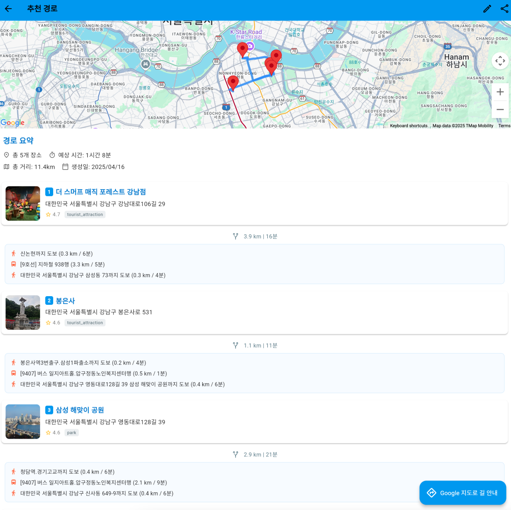

각각 finetuning이 된
모델(첫 번째)과 기본 모델(두 번째) - 설명: META의 Llama
3.1 8b 모델을 한식데이터를 이용해 파인튜닝 - 사용 기술:
Langchain, Llama, PEFT, Lora - Huggingface 링크:Llama3.1_8b_korean_food_finetuned
강화학습
기반 Super Mario Bros 학습 (MadMario)
- PPO(Proximal Policy
Optimization) 알고리즘과 stable-baselines3 활용
- SubprocVecEnv를 통해 최대 8개의 병렬 환경에서 효율적인
학습 수행
- MPS(Metal Performance Shaders) 디바이스 설정으로 Mac 환경
최적화
- Gym / Gymnasium API 호환 문제 해결 및 VecEnv 기반 학습 안정화
악성 URL 탐지 (DACON)
설명: DACON 공모전에서 제공된 약 18만 개의 URL
데이터 전처리 및 분석을 수행하여 머신러닝 기반 피싱 URL 탐지 모델
개발
주요 기여: 도메인 및 N-그램 특성 추출, BERT
임베딩과 CNN + XGBoost 앙상블 융합
기술 스택: Python, Pandas, scikit-learn, PyTorch,
Transformers, XGBoost
성과: F1-score 0.969 달성
Discord LLM 봇 개발 및 배포
-
설명: 로컬 환경에서 동작하는 LLM(Gemma3)을 활용하여
Discord 서버 내 실시간 대화 지원 봇 개발
- 주요 기능: 사용자 쿼리 시 웹 스크래핑 기반 정보 수집
및 RAG(Retrieval-Augmented Generation)로 답변 생성
- 기술 스택: Python, Discord.py, LangChain, Docker,
Llama.cpp
- 배포: Docker 컨테이너로 패키징 후 Github에 업로드하여
배포
Pathmaker 여행지 추천 앱
 -
설명: Pathmaker 팀에서 Flutter 기반 프론트엔드와
FastAPI 백엔드를 연동하여 여행지 추천 서비스 개발
- 주요 기여: PostgreSQL 데이터베이스 설계, RESTful API
구현, Google Places API 연동, 사용자 선호도 기반 추천 알고리즘
구현
- 추천 알고리즘: 거리, 평점, 카테고리 가중치 기반
유사도 산정 및 순위 제공
- 기술 스택: Flutter (Dart), FastAPI, PostgreSQL,
SQLAlchemy, Google Maps & Places API
Runpod 활용
유튜브 숏폼 영상 자동 생성 시스템
설명: RunPod의 Stable Diffusion 3를 활용해 스크립트
기반 숏폼 콘텐츠를 자동 생성하고, 생성된 이미지와 TTS 음성을 기반으로
영상 편집, 저장까지 완전 자동화된 워크플로우를 구축한 시스템입니다.
주요 기능:
로컬 LLM 기반 스크립트 생성 자동화: 사용자가 설정한 주제 리스트에서
랜덤 선택 → 로컬 LLM API 호출 → 스크립트 출력
RunPod SD3 API를 활용한 이미지 생성: 생성된 스크립트를 이미지
프롬프트로 변환하여 SD3로 시각 자료 생성
Dia 1.6b TTS 음성 더빙 처리: 스크립트 내용을 TTS 처리하여 내레이션용
음성 생성
FFmpeg 기반 영상 합성 및 텍스트 오버레이 삽입: SD3 이미지 + TTS 음성
→ 자동 영상화 (1080x1920, 텍스트 포함)
기술 스택: Runpod (Stable Diffusion 3), Local LLM,
Dia 1.6b TTS, FFmpeg
AI 기반 채용정보 수집
및 RAG 분석 시스템
careers_discord_bot_example
설명: 한국 주요 IT 기업들의 채용공고를 자동으로
수집하고, RAG(Retrieval-Augmented Generation) 기술을 활용하여 사용자가
원하는 조건에 맞는 채용정보를 지능적으로 검색 및 추천하는
시스템입니다.


 각각 finetuning이 된
모델(첫 번째)과 기본 모델(두 번째) - 설명: META의 Llama
3.1 8b 모델을 한식데이터를 이용해 파인튜닝 - 사용 기술:
Langchain, Llama, PEFT, Lora - Huggingface 링크:Llama3.1_8b_korean_food_finetuned
각각 finetuning이 된
모델(첫 번째)과 기본 모델(두 번째) - 설명: META의 Llama
3.1 8b 모델을 한식데이터를 이용해 파인튜닝 - 사용 기술:
Langchain, Llama, PEFT, Lora - Huggingface 링크:Llama3.1_8b_korean_food_finetuned - PPO(Proximal Policy
Optimization) 알고리즘과
- PPO(Proximal Policy
Optimization) 알고리즘과  -
설명: 로컬 환경에서 동작하는 LLM(Gemma3)을 활용하여
Discord 서버 내 실시간 대화 지원 봇 개발
-
설명: 로컬 환경에서 동작하는 LLM(Gemma3)을 활용하여
Discord 서버 내 실시간 대화 지원 봇 개발